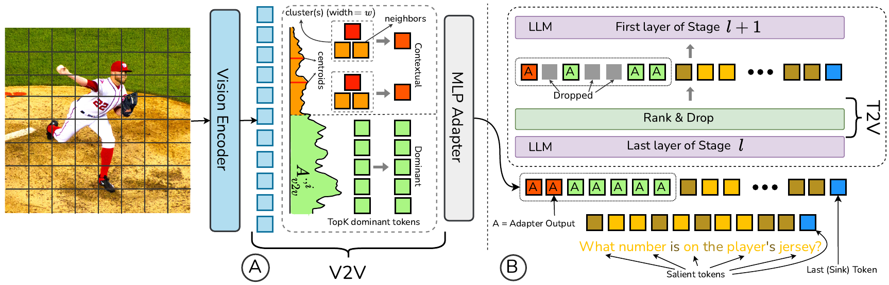
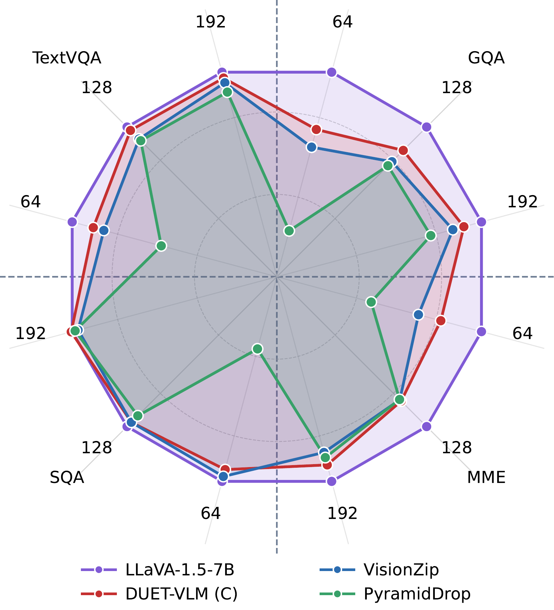
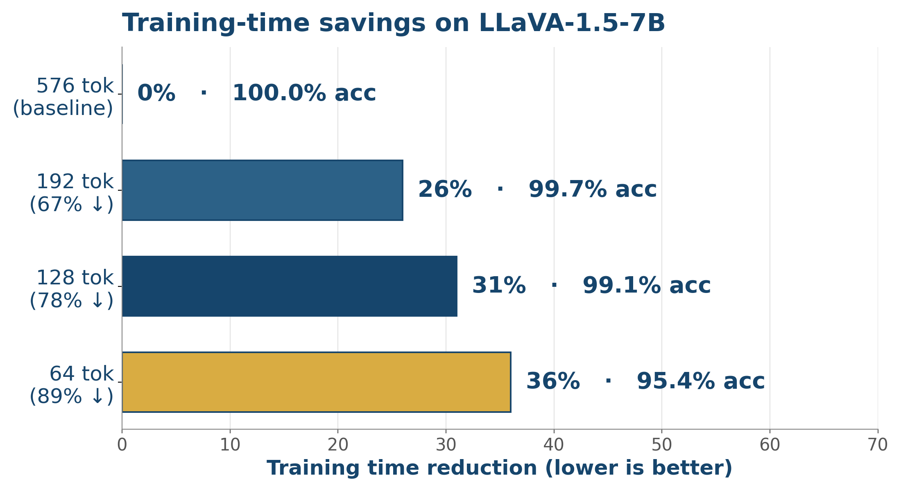
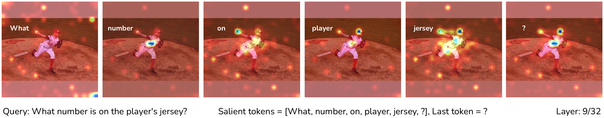
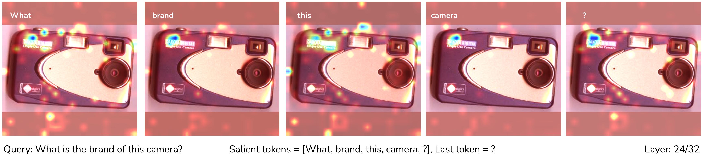

Vision–language models (VLMs) waste compute on hundreds of redundant visual tokens that contribute little to the answer. DUET-VLM is a dual-stage token-reduction framework that jointly optimises the visual and language pathways: (i) a V2V stage merges semantically redundant patch tokens inside the vision encoder using a redundancy-aware clustering of self-attention, and (ii) a T2V stage prunes vision tokens inside the LLM layer-by-layer, guided by attention from salient text tokens.
Across image and video benchmarks, DUET-VLM matches or beats prior token-reduction methods (VisionZip, PyramidDrop, FastV, FitPrune, HiRED) at every budget — retaining > 99 % of full-token accuracy with a 67 % token cut and > 97 % at 89 %. Crucially, the same machinery also accelerates training, slashing wall-clock training time by ~31 % on LLaVA-1.5-7B with no measurable accuracy loss.

Pipeline. (A) Redundancy-aware V2V merging inside the vision encoder; (B) text-guided T2V pruning across LLM layers.

Accuracy retained vs. full-token baseline on TextVQA, GQA, MME and SQA (LLaVA-1.5-7B, 192-token budget).

Training-time savings at 192 / 128 / 64-token budgets — accuracy almost untouched.
| Method | 192 tok | 128 tok | 64 tok |
|---|---|---|---|
| VisionZip | 97.7 % | 96.3 % | 92.8 % |
| PyramidDrop | 96.4 % | 95.6 % | 86.7 % |
| DUET-VLM (C) | 99.0 % | 98.1 % | 95.4 % |


Text-guided attention isolates query-relevant patches across LLM layers — DUET-VLM preserves the regions the question actually depends on while shedding background.
@inproceedings{singh2026duetvlm,
title = {DUET-VLM: Dual-stage Unified Efficient Token reduction
for VLM Training and Inference},
author = {Singh, Aditya Kumar and Kandala, Hitesh and
Brahma, Pratik Prabhanjan and Liu, Zicheng and
Barsoum, Emad},
booktitle = {Proceedings of the IEEE/CVF Conference on Computer
Vision and Pattern Recognition (CVPR)},
year = {2026},
}